Übungen für Mund und Rachen
Zehn Minuten am Tag für Zunge, Gaumen und Rachen: geführte Übungen mit Timer, ein 8-Wochen-Plan und dein Schlaftagebuch – ohne Konto, ohne Mikrofon.
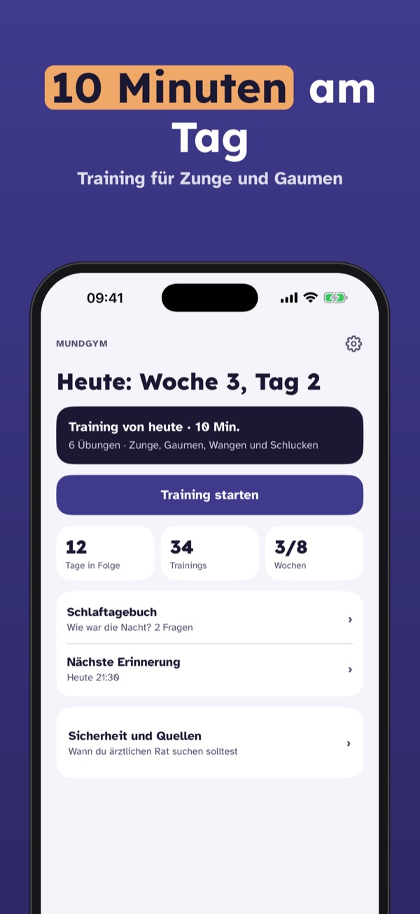
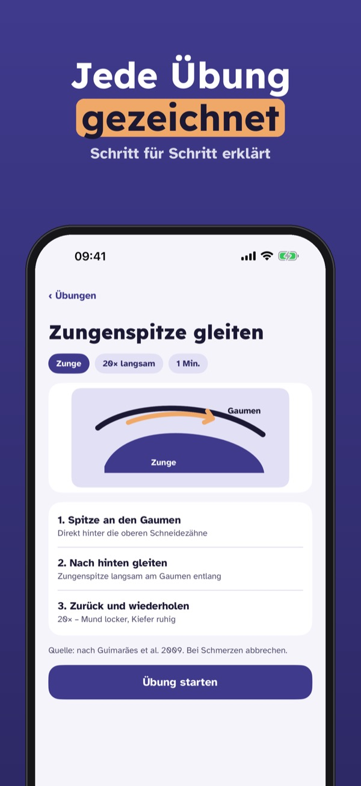
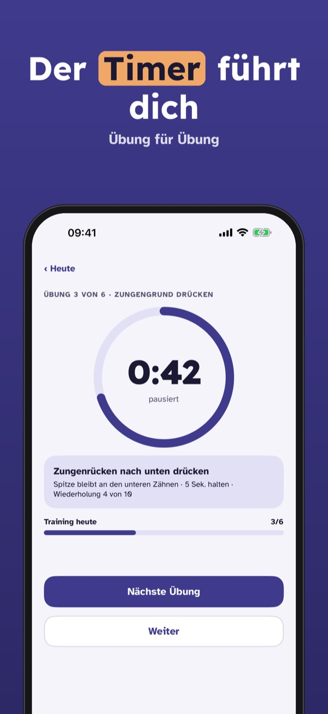
Mundgym ist ein Trainingsprogramm für Mund-, Zungen- und Rachenmuskeln – mit Übungen nach veröffentlichten myofunktionellen Programmen, Schritt für Schritt erklärt.
Sechs Grundübungen, Woche 1–2 des Plans und das Schlaftagebuch kannst du ohne Kauf nutzen. Die Vollversion ist ein Einmalkauf und schaltet alle Übungen, den 8-Wochen-Plan und den Verlauf frei. Kein Abo.
Mundgym ist kein Medizinprodukt, stellt keine Diagnose und ersetzt keine Behandlung. Bei Atemaussetzern im Schlaf oder starker Tagesmüdigkeit sprich mit deiner Ärztin oder deinem Arzt.
Terms of Use (EULA): https://www.apple.com/legal/internet-services/itunes/dev/stdeula/
Privacy: https://baytechbv.github.io/privacy/mundgym-eu/
Övningar för tunga och svalg
Tio minuter om dagen för tunga, gom och svalg: guidade övningar med timer, en 8-veckorsplan och din sömndagbok – utan konto och utan mikrofon.
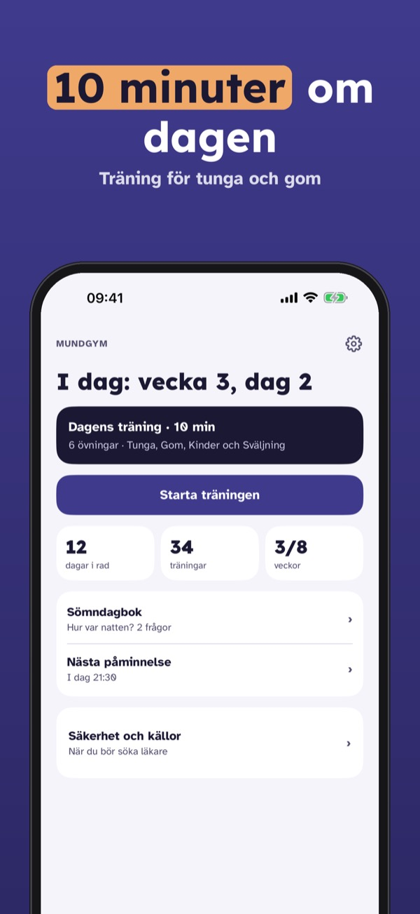
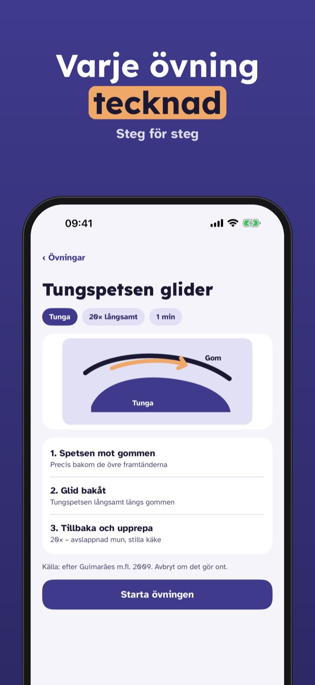
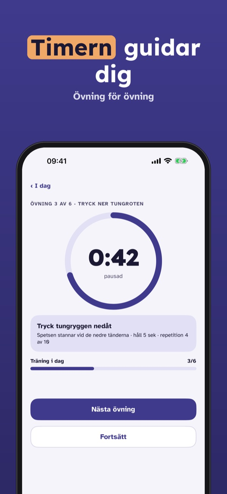
Mundgym är ett träningsprogram för musklerna i mun, tunga och svalg – med övningar efter publicerade myofunktionella program, förklarade steg för steg.
Sex grundövningar, vecka 1–2 av planen och sömndagboken kan användas utan köp. Fullversionen är ett engångsköp som låser upp alla övningar, 8-veckorsplanen och översikten. Ingen prenumeration.
Mundgym är ingen medicinteknisk produkt, ställer ingen diagnos och ersätter ingen behandling. Vid andningsuppehåll i sömnen eller stark trötthet på dagen: tala med en läkare.
Terms of Use (EULA): https://www.apple.com/legal/internet-services/itunes/dev/stdeula/
Privacy: https://baytechbv.github.io/privacy/mundgym-eu/
Allenamento di bocca e gola
Dieci minuti al giorno per lingua, palato e gola: esercizi guidati con timer, un piano di 8 settimane e il tuo diario del sonno – senza account e senza microfono.
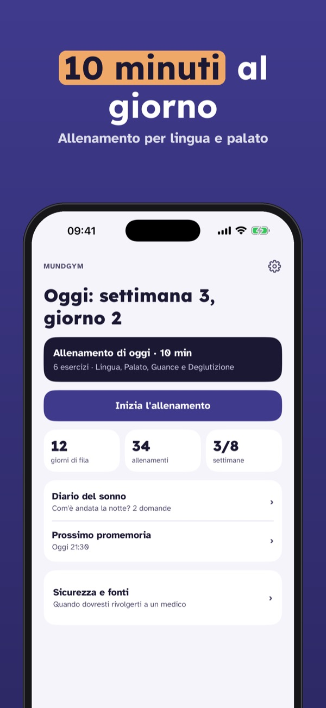
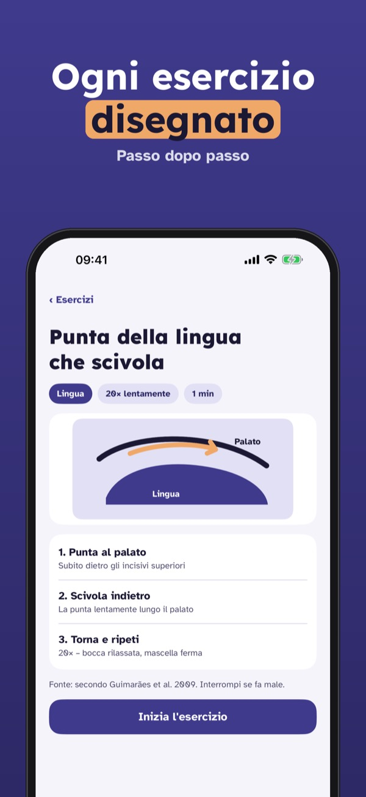
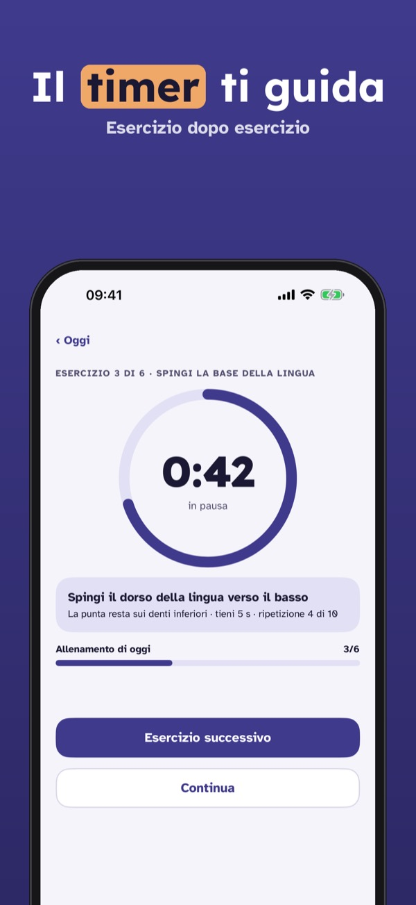
Mundgym è un programma di allenamento per i muscoli di bocca, lingua e gola – con esercizi basati su programmi miofunzionali pubblicati, spiegati passo dopo passo.
Sei esercizi di base, le settimane 1–2 del piano e il diario del sonno si usano senza acquisto. La versione completa è un acquisto unico che sblocca tutti gli esercizi, il piano di 8 settimane e l’andamento. Nessun abbonamento.
Mundgym non è un dispositivo medico, non fa diagnosi e non sostituisce alcuna cura. In caso di pause respiratorie nel sonno o forte stanchezza di giorno, parla con il tuo medico.
Terms of Use (EULA): https://www.apple.com/legal/internet-services/itunes/dev/stdeula/
Privacy: https://baytechbv.github.io/privacy/mundgym-eu/
Lengua, paladar y garganta
Diez minutos al día para lengua, paladar y garganta: ejercicios guiados con temporizador, un plan de 8 semanas y tu diario de sueño, sin cuenta y sin micrófono.
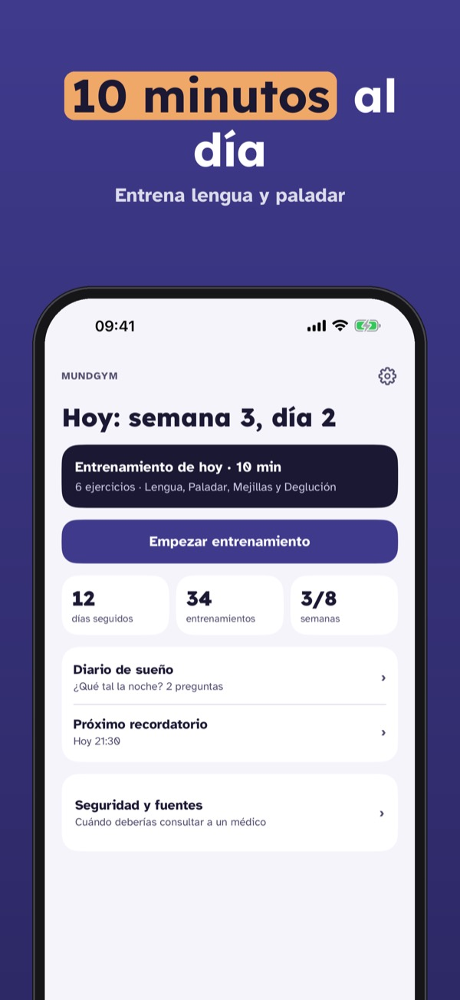
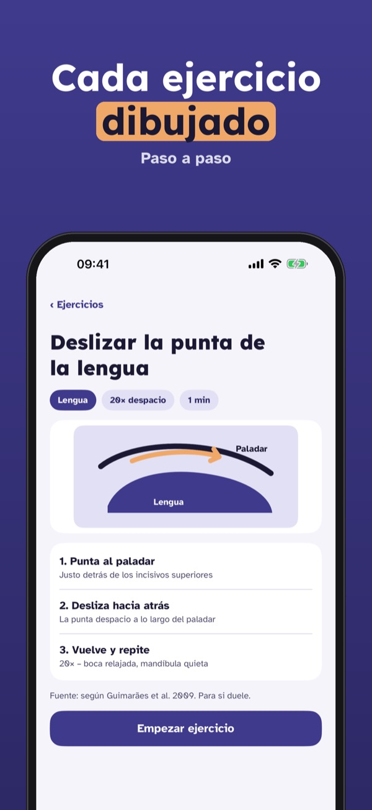
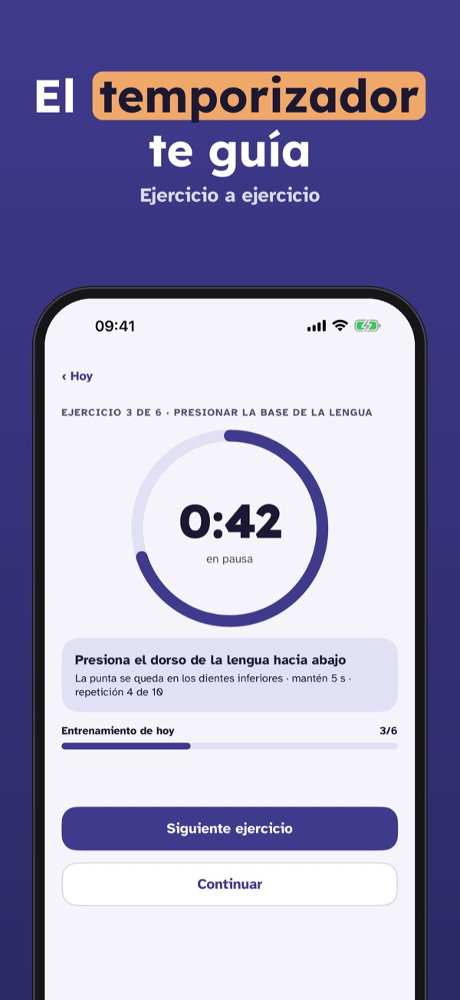
Mundgym es un programa de entrenamiento para los músculos de la boca, la lengua y la garganta, con ejercicios basados en programas miofuncionales publicados.
Seis ejercicios básicos, las semanas 1–2 del plan y el diario de sueño se pueden usar sin compra. La versión completa es una compra única que desbloquea todos los ejercicios, el plan de 8 semanas y el progreso. Sin suscripción.
Mundgym no es un producto sanitario, no hace diagnósticos y no sustituye ningún tratamiento. Si tienes pausas respiratorias al dormir o mucho cansancio de día, habla con tu médico.
Terms of Use (EULA): https://www.apple.com/legal/internet-services/itunes/dev/stdeula/
Privacy: https://baytechbv.github.io/privacy/mundgym-eu/
Oefeningen voor tong en keel
Tien minuten per dag voor tong, gehemelte en keel: begeleide oefeningen met timer, een plan van 8 weken en je slaapdagboek – zonder account en zonder microfoon.
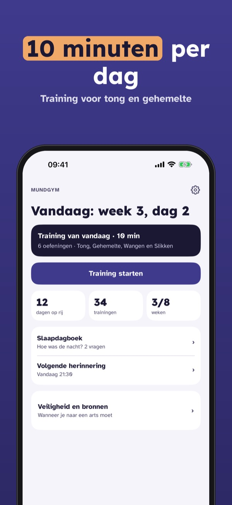
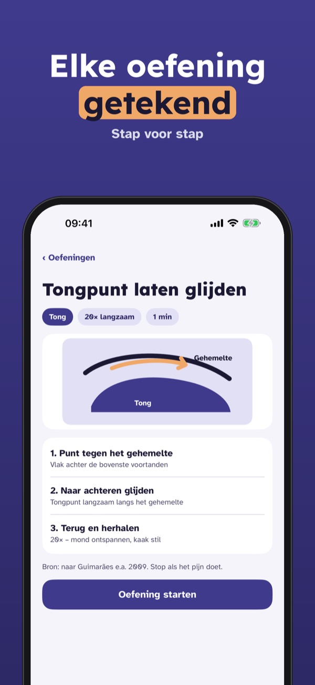
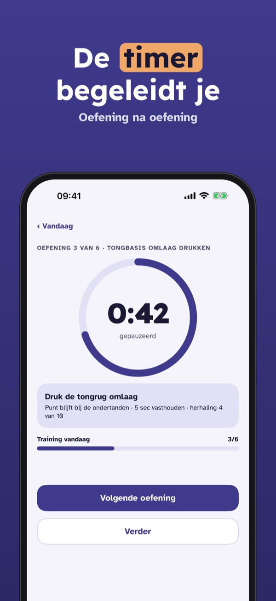
Mundgym is een trainingsprogramma voor de spieren van mond, tong en keel – met oefeningen op basis van gepubliceerde myofunctionele programma’s.
Zes basisoefeningen, week 1–2 van het plan en het slaapdagboek kun je zonder aankoop gebruiken. De volledige versie is een eenmalige aankoop voor alle oefeningen, het plan van 8 weken en de voortgang. Geen abonnement.
Mundgym is geen medisch hulpmiddel, stelt geen diagnose en vervangt geen behandeling. Heb je ademstops in je slaap of ben je overdag erg moe? Praat met je huisarts.
Terms of Use (EULA): https://www.apple.com/legal/internet-services/itunes/dev/stdeula/
Privacy: https://baytechbv.github.io/privacy/mundgym-eu/